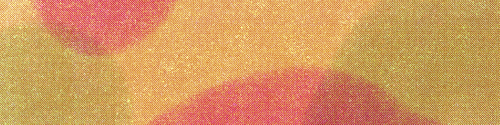

Welcome! My name is Ivanka and I am an artist and art therapy student from Ottawa, Canada. This space is where I share past and current art projects, blog posts on Patreon, and snapshots of my work and ideas on Instagram.
Art therapy integrates the creative process (drawing, painting, sculpting, etc.) with psychotherapy and/or other supportive, relational practices to facilitate healing, growth, and holistic well-being. Art therapy can facilitate self-expression, emotional and embodied awareness, connections with and development of strengths and skills, as well as cultivation of mutual support and community-building in group settings. Art therapy offers alternative ways to communicate and express feelings and experiences that words cannot adequately describe.